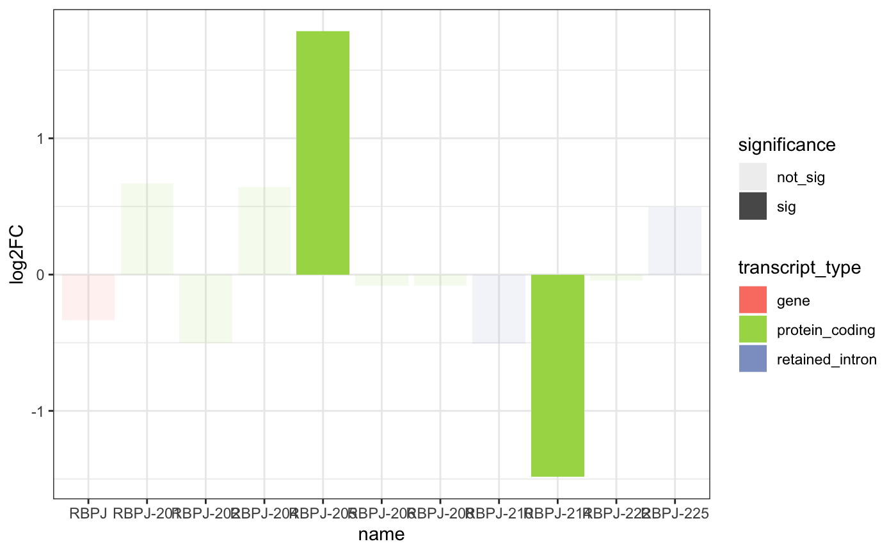
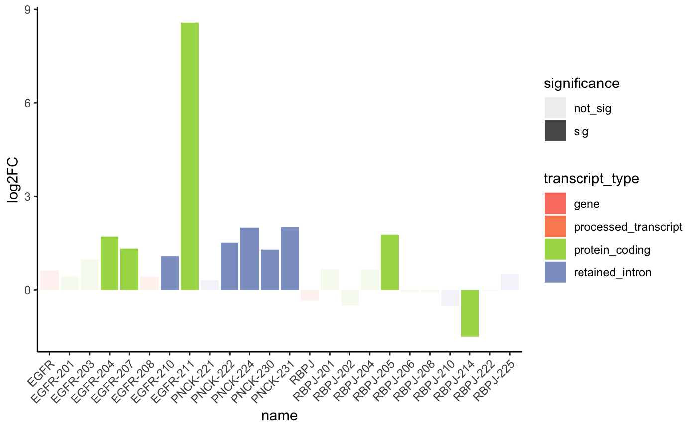
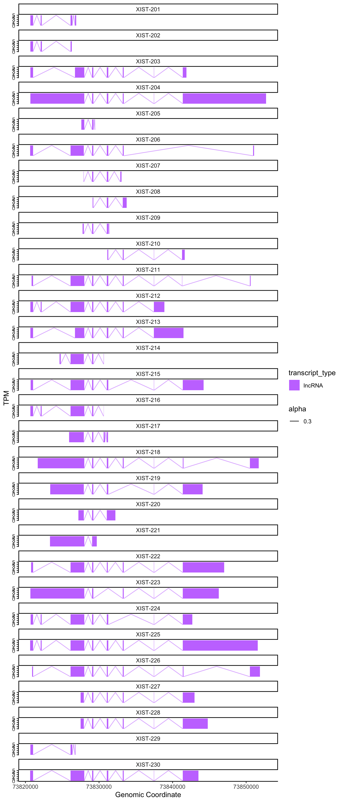
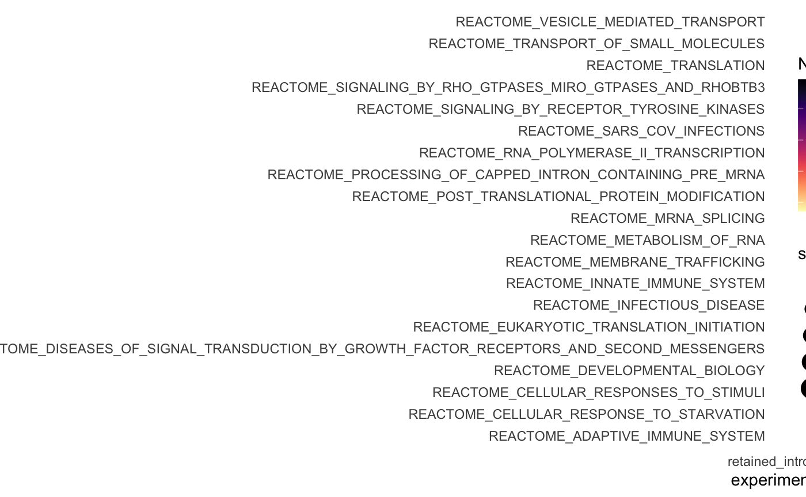

Isoformic: Isoform-level biological interpretation of transcriptomic data
Izabela Mamede Conceição
Laboratory of Genetics Biochemistry, Universidade Federal de Minas Gerais, Belo Horizonte, BrazilLucio Rezende Queiroz
Department of Pathology and Laboratory Medicine, Weill Cornell Medicine, New York, USA2023-04-07
Source:vignettes/intro_isoformic.Rmd
intro_isoformic.RmdThe Isoformic method
Welcome to isoformic, a workflow for isoform-level
biological interpretation of transcriptomic data.
Information
All data used for the examples here were extracted from the paper: “Landscape of Dysregulated Placental RNA Editing Associated With Preeclampsia” in which were analyzed generated RNA-Seq datasets from preeclamptic and control placentas. This dataset was chosen due for having many biological replicates with high sequencing depth.
This tutorial will encompass X different steps divided into X unities for which type of analysis you want to perform.
Dependencies
NOTE: As of 2024-06-08 The version of the Workflow described in this vignette is not maintained. For installing
v0.0.1of the package and run this workflow use:
if (requireNamespace(remotes, quietly = TRUE)) {
remotes::install_github("luciorq/isoformic@v0.0.1")
}Load dependency packages
Setting up the data
Initial Considerations
We highly recommend the use of Salmon for
transcript-level abundance estimation and the swish
method implemented in the fishpond
R package for isoform-level differential expression.
The GENCODE project offers a good annotation of isoforms for the human and mouse genomes, including isoforms of non-coding genes. Using other sources of annotation can render completely different results for the following analysis.
Part 1: Data input
In this version you would need two essential input and two optional inputs.
Essential input 1: A transcript differential
expression table. This table can be outputted from any kind of
differential expression software you use but it needs to contain 1)
information on Transcript name OR Ensembl Transcript ID per line 2)
log2FoldChange information in a column named “log2FoldChange”. 3)
p-value information in a column named “pvalue”. Any other
columns on the table will not be used on the main analysis. This DET
table should be the UNFILTERED version of your table.
path_package("isoformic")## /private/var/folders/2q/937_bkg10svdwx1x00prs9nm0000gn/T/RtmppvbChK/temp_libpath7b086adc7ba4/isoformicExample:
PE1_DETs <- read_csv(path_package("isoformic", "extdata", "DETs_fixed.csv"))
head(PE1_DETs)## # A tibble: 6 × 4
## transcript_id log2FC pvalue qvalue
## <chr> <dbl> <dbl> <dbl>
## 1 ENST00000456328.2 -0.692 0.0199 0.0940
## 2 ENST00000488147.1 0.0731 0.652 0.812
## 3 ENST00000466430.5 -0.146 0.364 0.590
## 4 ENST00000442987.3 -0.183 0.0841 0.242
## 5 ENST00000494149.2 -0.728 0.00599 0.0420
## 6 ENST00000595919.1 -0.0789 0.951 0.977Essential input 2: a FASTA file from GENCODE which
corresponds to the same fasta you used for the transcriptome alignment.
These need to be on the same version since here you will use names from
that GENCODE version to do most of the mergings. The annotation used
also need to be GENCODE since it posses the transcript_type
column that will be used as information as well. If you wish you CAN
provide that information through and external source not being GENCODE,
and from that you will need a table with at least three columns: 1)a
transcript_name column that needs to match those gene names
on your DET table and on your TPM table, 2) a gene-name column to tell
which gene those transcripts belong to and 3) a transcript_type
column.
This table will also have to use transcript names from GENCODE and have a column stating the transcript biotype that is also got from GENCODE annotation. The statistics can be ‘pvalue’, ‘svalue’ or ‘qvalue’ but a ‘log2FoldChange’ between your case and control conditions is also needed for most of the plots.
Optional inputs: 1) A Transcript per million (TPM) table matching the transcripts in the differential expression table 2) a GFF3 file of the transcriptome version which corresponds to your FASTA and 3) a table of differentially expressed genes of that data to also use as comparison.
Any differential expression table can be used here but the pipeline authors, after multiple testing, reached the conclusion that the swish implementation for a differential transcript expression analysis using inferential replicate counts from Salmon is the one that performs the best for medium to high depth transcriptome libraries when looking at number of transcripts and significant values.
Not well annotated transcriptomes will not output results as these and all the tests here mentioned were done using human data.
Isoformic makes available example files that can be used as model for formatting the necessary files for running the workflow. The files can be found in the following path.
path_package("isoformic", "extdata")## /private/var/folders/2q/937_bkg10svdwx1x00prs9nm0000gn/T/RtmppvbChK/temp_libpath7b086adc7ba4/isoformic/extdataAnd the files available can be seen with:
path_package("isoformic", "extdata") |>
dir_ls()## /private/var/folders/2q/937_bkg10svdwx1x00prs9nm0000gn/T/RtmppvbChK/temp_libpath7b086adc7ba4/isoformic/extdata/DEGs_PE_fixed2.csv
## /private/var/folders/2q/937_bkg10svdwx1x00prs9nm0000gn/T/RtmppvbChK/temp_libpath7b086adc7ba4/isoformic/extdata/DETs_fixed.csv
## /private/var/folders/2q/937_bkg10svdwx1x00prs9nm0000gn/T/RtmppvbChK/temp_libpath7b086adc7ba4/isoformic/extdata/PE_1_DETs.csv
## /private/var/folders/2q/937_bkg10svdwx1x00prs9nm0000gn/T/RtmppvbChK/temp_libpath7b086adc7ba4/isoformic/extdata/PE_1_counts.csv
## /private/var/folders/2q/937_bkg10svdwx1x00prs9nm0000gn/T/RtmppvbChK/temp_libpath7b086adc7ba4/isoformic/extdata/c2.cp.reactome.v2023.1.Hs.symbols.gmt.txt
## /private/var/folders/2q/937_bkg10svdwx1x00prs9nm0000gn/T/RtmppvbChK/temp_libpath7b086adc7ba4/isoformic/extdata/hsapiens_REAC_subset.gmt
## /private/var/folders/2q/937_bkg10svdwx1x00prs9nm0000gn/T/RtmppvbChK/temp_libpath7b086adc7ba4/isoformic/extdata/isoformic-logo.png
PE1_DETs <- path_package("isoformic", "extdata", "DETs_fixed.csv") |>
read_csv()
PE1_DEGs <- path_package("isoformic", "extdata", "DEGs_PE_fixed2.csv") |>
read_csv()
PE1_counts <- path_package("isoformic", "extdata", "PE_1_counts.csv") |>
read_csv() |>
dplyr::rename(transcript_id = ...1)Here we load the table which points for the libraries that represent our cases (treatment) and our controls. In this library, cases are the pregnant woman with Preeclampsia and controls matched pregnant without Preeclampsia.
sample_table <- data.frame(
samples = colnames(PE1_counts)[2:ncol(PE1_counts)],
condition = c(rep("treatment", 8), rep("control", ncol(PE1_counts) - 9))
)
head(sample_table)## samples condition
## 1 SRR11498039 treatment
## 2 SRR11498040 treatment
## 3 SRR11498041 treatment
## 4 SRR11498042 treatment
## 5 SRR11498043 treatment
## 6 SRR11498044 treatmentDownload reference files
The references used for this project were obtained from from the GENCODE Project version 34 for the Human genome annotation.
The annotation file in GFF3 format was obtained from https://ftp.ebi.ac.uk/pub/databases/gencode/Gencode_human/release_34/gencode.v34.chr_patch_hapl_scaff.annotation.gff3.gz.
This step may take a while depending on the speed of your internet connection
download_reference(version = "34", file_type = "fasta")## [1] "data-raw/gencode.v34.transcripts.fa.gz"
download_reference(version = "34", file_type = "gff")## [1] "data-raw/gencode.v34.chr_patch_hapl_scaff.annotation.gff3.gz"
# download_reference(version = "34", file_type = "gtf")Part 2: Transcript to Gene and Gene to transcript reference tables
Using the FASTA file from GENCODE we will construct a transcript per gene dictionary table and add that information to the main DEG, DET and TPM table. This step will depend a lot on the names of the columns on your tables so in the Vignette we decided to change names to keep consistency.
The input used here is a FASTA file containing the transcript sequences and their annotation information downloaded from the GENCODE website with the specific version you used for the alignment. In the case here GENCODE v34.
fasta_path <- "data-raw/gencode.v34.transcripts.fa.gz"
read_lines(fasta_path, n_max = 5)## [1] ">ENST00000456328.2|ENSG00000223972.5|OTTHUMG00000000961.2|OTTHUMT00000362751.1|DDX11L1-202|DDX11L1|1657|processed_transcript|"
## [2] "GTTAACTTGCCGTCAGCCTTTTCTTTGACCTCTTCTTTCTGTTCATGTGTATTTGCTGTC"
## [3] "TCTTAGCCCAGACTTCCCGTGTCCTTTCCACCGGGCCTTTGAGAGGTCACAGGGTCTTGA"
## [4] "TGCTGTGGTCTTCATCTGCAGGTGTCTGACTTCCAGCAACTGCTGGCCTGTGCCAGGGTG"
## [5] "CAAGCTGAGCACTGGAGTGGAGTTTTCCTGTGGAGAGGAGCCATGCCTAGAGTGGGATGG"As that header shows the imported table is still very weird and not
tidy, so we pass it through the make_tx_to_gene function
that will make it tidy and ready for further use.
tx_to_gene <- make_tx_to_gene(
file_path = fasta_path,
file_type = "fasta"
)
head(tx_to_gene)## # A tibble: 6 × 8
## transcript_id gene_id havanna_gene_id havanna_transcript_id transcript_name
## <chr> <chr> <chr> <chr> <chr>
## 1 ENST00000456328… ENSG00… OTTHUMG0000000… OTTHUMT00000362751.1 DDX11L1-202
## 2 ENST00000450305… ENSG00… OTTHUMG0000000… OTTHUMT00000002844.2 DDX11L1-201
## 3 ENST00000488147… ENSG00… OTTHUMG0000000… OTTHUMT00000002839.1 WASH7P-201
## 4 ENST00000619216… ENSG00… - - MIR6859-1-201
## 5 ENST00000473358… ENSG00… OTTHUMG0000000… OTTHUMT00000002840.1 MIR1302-2HG-202
## 6 ENST00000469289… ENSG00… OTTHUMG0000000… OTTHUMT00000002841.2 MIR1302-2HG-201
## # ℹ 3 more variables: gene_name <chr>, entrez_id <chr>, transcript_type <chr>Now our tx_to_gene table has 6 columns that are in
order: Ensembl transcript id, Ensembl gene id, Havanna gene id, Havanna
transcript id, transcript name, gene name, entrez gene number and
transcript type. For the DEG, DET and TPM table we will need the Ensembl
gene id, the Gene name and the transcript type information so we can
convert our tables for transcript_name and add the type information and
if the gene is a DE to the DET table.
Select the columns with the gene id and the gene name info
tx_to_gene <- tx_to_gene |>
dplyr::select(
transcript_id, gene_id,
transcript_name, gene_name,
transcript_type
)First we add the gene_name information to the DEG
table
gene_join <- tx_to_gene |>
dplyr::select(gene_id, gene_name) |>
distinct()
PE1_DEGs <- PE1_DEGs |>
left_join(gene_join, by = "gene_id")Now the transcript name for the TPM table
tpm_join <- tx_to_gene |>
dplyr::select(transcript_id, transcript_name) |>
distinct()
PE1_counts <- PE1_counts |>
left_join(tpm_join, by = c("transcript_id"))The DET table will be our main table for analysis.
Part 3: Constructing the main table
The Gene-level information will input for us categorical values to be added on the DET table. In more detail: we need to now if that transcript’s gene (1) pass on the gene-level expression cutoff values and (2) which type does that transcript belongs to.
There are multiple types on the Ensembl library and some of their definitions superpose to one another, the ones further analyzed here can be seen on this figure
knitr::include_graphics("https://i.imgur.com/UWoAr0k.png")
First we add the transcript name and type information to the DET table
transcript_joined <- tx_to_gene |>
dplyr::select(transcript_id, transcript_name, transcript_type) |>
distinct()
PE1_DETs <- PE1_DETs |>
left_join(transcript_joined, by = "transcript_id")For the gene expression level we have to convert the DEG table and do some cutting to get the genes which present as DE and exclude possible noise. Here we used the cutoffs of absolute log2FC higher than one and pvalue lower than 0.05
So we first filter the DEG table for the significant ones and the add it as a column on our main DET table using the isDEGsig function.
PE1_DEGs_new_names_sig <- PE1_DEGs |>
filter(abs(log2FC) >= 1) |>
filter(pvalue <= 0.05) |>
dplyr::select(gene_name) |>
drop_na()
DEGs_sig_joined <- PE1_DEGs_new_names_sig |>
left_join(tx_to_gene, by = "gene_name")
transcript_gene_join <- tx_to_gene |>
dplyr::select(transcript_name, gene_name) |>
distinct()
PE1_DETs_final <- is_deg_sig(DEGs_sig_joined$transcript_name, PE1_DETs)
PE1_DETs_final <- PE1_DETs_final |>
left_join(transcript_gene_join, by = "transcript_name")And now we have all the tables we will need for all graphs and analyses.
One detail is that the DET final table now allows us to see genes whose transcripts are differentially expressed but their genes are not with a simple dplyr filter.
This table will represent cases which could be characterized as isoform switches, when two transcripts of the same gene are expressed in opposite directions what makes the total expression of that gene not be significant either up or down-regulated.
Colors
Before we start plotting we will define a general set of colors to be used through the entire pipeline associated with a certain type of transcript. Here we colored all the most abundant types separately and the less abundant on the same grey tone and name that vector accordingly
fixed_tx_biotypes <- c(
"gene", "protein_coding", "retained_intron",
"processed_transcript", "nonsense_mediated_decay",
"lncRNA", "processed_pseudogene",
"transcribed_unprocessed_pseudogene",
"unprocessed_pseudogene", "non_stop_decay", "transcribed_unitary_pseudogene",
"pseudogene", "unitary_pseudogene"
)
tx_type_color_names <- c(
"#fb8072", "#a6d854", "#8da0cb", "#fc8d62",
"#66c2a5", "#e78ac3", "#ffd92f", "#e5c494",
"#d9d9d9", "#d9d9d9", "#d9d9d9", "#ffffb3",
"#d9d9d9"
)
names(tx_type_color_names) <- fixed_tx_biotypes
tx_type_color_names## gene protein_coding
## "#fb8072" "#a6d854"
## retained_intron processed_transcript
## "#8da0cb" "#fc8d62"
## nonsense_mediated_decay lncRNA
## "#66c2a5" "#e78ac3"
## processed_pseudogene transcribed_unprocessed_pseudogene
## "#ffd92f" "#e5c494"
## unprocessed_pseudogene non_stop_decay
## "#d9d9d9" "#d9d9d9"
## transcribed_unitary_pseudogene pseudogene
## "#d9d9d9" "#ffffb3"
## unitary_pseudogene
## "#d9d9d9"Log2FC Plot
The simplest and first plot on this tutorial will be a log2FC plot, this plot will compare the foldchange of case vs control from the gene, to that of its transcripts adding to that the significance information.
For that we will make a combined version of the DEG table with the DET table using the function join_DEG_DET.
DEG_DET_table <- join_DEG_DET(PE1_DEGs, PE1_DETs_final, 1, 0.05)
head(DEG_DET_table)## # A tibble: 6 × 9
## id log2FC pvalue qvalue name transcript_type gene_name abs_log2FC
## <chr> <dbl> <dbl> <dbl> <chr> <chr> <chr> <dbl>
## 1 ENSG00000000… -0.320 0.0485 0.125 TSPA… gene TSPAN6 0.320
## 2 ENSG00000000… 0.381 0.107 0.222 TNMD gene TNMD 0.381
## 3 ENSG00000000… -0.0693 0.260 0.417 DPM1 gene DPM1 0.0693
## 4 ENSG00000000… 0.107 0.386 0.547 SCYL3 gene SCYL3 0.107
## 5 ENSG00000000… 0.162 0.229 0.380 C1or… gene C1orf112 0.162
## 6 ENSG00000000… -0.162 0.160 0.296 FGR gene FGR 0.162
## # ℹ 1 more variable: significance <chr>Now you just use the plotLog2FC for any gene you would
like. The function also works well with a small vector of
gene_names.
plot_log2FC(DEG_DET_table, "RBPJ")
# Work here to look better? or just remove for now
# the best would be a loop that goes over each one of a list and
# plots them in a folder the default could be the DET not deg table
plot_obj <- plot_log2FC(DEG_DET_table, c("RBPJ", "EGFR", "PNCK"))
library(ggplot2)
plot_obj +
theme_classic() +
theme(axis.text.x = element_text(angle = 45, vjust = 1, hjust = 1))
Profile Plot
Another good more quantifiable way to visualize this switch is using the Transcript per Million Count of each transcript, compared to those of the gene between the case and control conditions. For this we use a profile plot that in one size plots the values of TPM for the case conditions and in the other the value of the TPM for the control conditions.
## # A tibble: 70,870 × 9
## id log2FC pvalue qvalue name transcript_type gene_name abs_log2FC
## <chr> <dbl> <dbl> <dbl> <chr> <chr> <chr> <dbl>
## 1 ENST000006… 0.640 3.11e-1 5.40e-1 ISG1… protein_coding ISG15 0.640
## 2 ENST000003… 0.534 1.29e-2 7.07e-2 AGRN… protein_coding AGRN 0.534
## 3 ENST000004… -0.530 5.81e-2 1.91e-1 AGRN… retained_intron AGRN 0.530
## 4 ENST000004… 1.83 1.66e-5 6.81e-4 RNF2… protein_coding RNF223 1.83
## 5 ENST000004… 0.415 2.20e-1 4.40e-1 TNFR… retained_intron TNFRSF4 0.415
## 6 ENST000003… 0.374 2.27e-1 4.48e-1 TNFR… protein_coding TNFRSF4 0.374
## 7 ENST000003… 0.479 6.70e-2 2.09e-1 TAS1… protein_coding TAS1R3 0.479
## 8 ENST000003… 0.217 3.82e-1 6.06e-1 DVL1… protein_coding DVL1 0.217
## 9 ENST000003… 0.570 8.12e-2 2.37e-1 DVL1… protein_coding DVL1 0.570
## 10 ENST000006… 1.91 4.34e-1 6.52e-1 DVL1… protein_coding DVL1 1.91
## # ℹ 70,860 more rows
## # ℹ 1 more variable: significance <chr>
unique(DEG_DET_table$transcript_type)## [1] "gene" "protein_coding"
## [3] "retained_intron" "processed_transcript"
## [5] "lncRNA" "nonsense_mediated_decay"
## [7] "processed_pseudogene" "unprocessed_pseudogene"
## [9] "transcribed_unprocessed_pseudogene" "non_stop_decay"
## [11] "transcribed_unitary_pseudogene" "pseudogene"
## [13] "unitary_pseudogene"
profile_data_df <- prepare_profile_data(
txi_transcript = PE1_counts,
tx_to_gene = tx_to_gene,
sample_metadata = sample_table,
de_result_gene = PE1_DEGs,
de_result_transcript = PE1_DETs,
var = "condition",
var_levels = c("control", "treatment")
)
#
# # Create output directory if don't exist yet
# path_to_save <- "results/profile_plot"
# fs::dir_create(path_to_save)
profile_plot <- plot_tx_expr(
genes_to_plot = "RBPJ",
profile_data = profile_data_df
)
profile_plot
# profile_data_df
# profile_plot <- plot_tx_expr(
# genes_to_plot = "ILR2A",
# profile_data = profile_data_df
# )
# profile_data_df |>
# filter(genename == "ILR2A")Functional Transcript Enrichment
One of the biggest caveats for transcript level analysis is that in many times is hard to extract biologically relevant information from so much data. Instead of having a final table with 900 genes you get a table with over 3.000 transcripts after the differential expression cut. The next step for gene-level DE would be functional enrichment or assigning the genes to metabolic pathways those may be regulating. Unfortunately are no comprehensive datasets for pathways transcripts may be regulating and the gene level analyses normally loses the difference between those transcripts which can produce proteins (protein_coding) from canonical translation pathways and those which cannot. To solve this problem we developed a method of expanding the known .gmts for transcript information and then separately enrich each selected category of transcript. Between the alternative spliced isoforms of that do not code for canonical proteins the most abundant are those classified as Nonsense-mediated decay, that have a premature stop codon which is subject to targeted degradation and the Processed transcript, which, for any reason, do not posses a complete Open Reading Frame. Inside the processed transcript category the one with the highest count are the Retained introns, sequences which retain an intronic portion after their processing.
These three categories are the most abundant in those transcripts which arise from the alternative splicing of a protein coding gene and these three will be the main focus for our enrichment and further graphs.
So first we choose a .gmt to be used for the enrichment, in this case we loaded a human reactome gene list from MSigDB called c2. But any gene list in GMT format works here. The gmt is loaded on the fgsea format with lists for each biological process.
path_package("isoformic", "extdata", "c2.cp.reactome.v2023.1.Hs.symbols.gmt.txt")## /private/var/folders/2q/937_bkg10svdwx1x00prs9nm0000gn/T/RtmppvbChK/temp_libpath7b086adc7ba4/isoformic/extdata/c2.cp.reactome.v2023.1.Hs.symbols.gmt.txt
genesets_list <- fgsea::gmtPathways(
gmt.file = path_package("isoformic", "extdata", "c2.cp.reactome.v2023.1.Hs.symbols.gmt.txt")
)
head(str(genesets_list[1:5]))## List of 5
## $ REACTOME_INTERLEUKIN_6_SIGNALING : chr [1:11] "JAK2" "TYK2" "CBL" "STAT1" ...
## $ REACTOME_APOPTOSIS : chr [1:179] "BAD" "CFLAR" "PSMB1" "PSMC4" ...
## $ REACTOME_HEMOSTASIS : chr [1:678] "FGR" "CD99" "TFPI" "KDM1A" ...
## $ REACTOME_INTRINSIC_PATHWAY_FOR_APOPTOSIS: chr [1:55] "BAD" "BID" "BAK1" "CASP8" ...
## $ REACTOME_MAPK3_ERK1_ACTIVATION : chr [1:10] "JAK2" "MAPK3" "TYK2" "IL6ST" ...## NULL
head(genesets_list[[1]])## [1] "JAK2" "TYK2" "CBL" "STAT1" "IL6ST" "IL6"Visualize how is our table before running
head(PE1_DETs_final)## # A tibble: 6 × 8
## transcript_id log2FC pvalue qvalue transcript_name transcript_type DEG_sig
## <chr> <dbl> <dbl> <dbl> <chr> <chr> <chr>
## 1 ENST0000064952… 0.640 3.11e-1 5.40e-1 ISG15-203 protein_coding YES
## 2 ENST0000037937… 0.534 1.29e-2 7.07e-2 AGRN-201 protein_coding YES
## 3 ENST0000046111… -0.530 5.81e-2 1.91e-1 AGRN-202 retained_intron YES
## 4 ENST0000045346… 1.83 1.66e-5 6.81e-4 RNF223-201 protein_coding YES
## 5 ENST0000049786… 0.415 2.20e-1 4.40e-1 TNFRSF4-203 retained_intron YES
## 6 ENST0000037923… 0.374 2.27e-1 4.48e-1 TNFRSF4-201 protein_coding YES
## # ℹ 1 more variable: gene_name <chr>Then you run the run_enrichment function it needs your DETs final table, the genesetlist and a pvalue cutoff to be used. It will generate a table of enrichment but with an extra column “experiment”.
enrichment_df <- run_enrichment(
det_df = PE1_DETs_final,
genesets_list = genesets_list,
pval_cutoff = 0.05
)
head(enrichment_df)## # A tibble: 6 × 9
## pathway pval padj log2err ES NES size leadingEdge experiment
## <chr> <dbl> <dbl> <dbl> <dbl> <dbl> <int> <list> <chr>
## 1 REACTOMEMA… 1.86e- 2 3.33e- 2 0.352 0.712 1.64 11 <chr [8]> protein_c…
## 2 REACTOME_A… 5.70e- 3 1.23e- 2 0.407 0.878 1.62 5 <chr [3]> protein_c…
## 3 REACTOME_A… 1.59e-13 3.25e-12 0.944 0.695 2.41 95 <chr [40]> protein_c…
## 4 REACTOME_A… 3.28e-10 3.92e- 9 0.814 0.690 2.29 72 <chr [26]> protein_c…
## 5 REACTOME_A… 7.00e- 4 1.98e- 3 0.477 0.722 1.86 20 <chr [8]> protein_c…
## 6 REACTOME_A… 4.54e- 2 7.25e- 2 0.277 0.603 1.52 17 <chr [11]> protein_c…## [1] "REACTOME_INTERLEUKIN_6_SIGNALING"
## [2] "REACTOME_APOPTOSIS"
## [3] "REACTOME_HEMOSTASIS"
## [4] "REACTOME_INTRINSIC_PATHWAY_FOR_APOPTOSIS"
## [5] "REACTOME_MAPK3_ERK1_ACTIVATION"
## [6] "REACTOME_TRANSLESION_SYNTHESIS_BY_Y_FAMILY_DNA_POLYMERASES_BYPASSES_LESIONS_ON_DNA_TEMPLATE"
unique(enrichment_df$experiment)## [1] "protein_coding" "unproductive"
## [3] "retained_intron" "processed_transcript"
## [5] "nonsense_mediated_decay"This experiment column has five possible values: Protein-coding: which is the enrichment associated with the transcripts categorized as protein coding. Unproductive: This is a term that will be used moving forward to combine those three categories of alternative spliced isoforms transcribed by coding genes. The authors are aware that biologically this term is deprecated since those kind of transcripts can produce peptides from alternative translation pathways. So here unproductive should be read as virtually incapable of producing the protein that is associated with that gene. As interpretation, we made this category to find pathways which are not being regulated on our coding data, but by the unproductive transcripts.
We also added three categories which are the individual alternative spliced types and the pathways regulated by those for specific analysis. In a very deep transcriptome the individual enrichment from those categories can also lead to promissing insights.
Plotting the enrichment
We used a LollipopPlot to plot all the enrichments side by side with the size of each pathway as the radius of the circles and the transparency is if that pathway passes on the desired cutoff. First we plot for only Protein_coding versus Unproductive with a very extringent NES cutoff.
enrichment_df |>
dplyr::filter((experiment %in% c("protein_coding", "unproductive")) & (abs(NES) > 2)) |>
dplyr::arrange(padj) |>
dplyr::slice_head(n = 30) |>
ggplot2::ggplot(ggplot2::aes(pathway, experiment)) +
ggplot2::geom_point(ggplot2::aes(col = NES, size = size)) +
ggplot2::coord_flip() +
ggplot2::theme_minimal() +
viridis::scale_color_viridis(option = "mako", direction = -1)
And now the specific unproductive subtypes
enrichment_df |>
dplyr::filter(!experiment %in% c("protein_coding", "unproductive") & abs(NES) > 1.5) |>
dplyr::arrange(padj) |>
dplyr::slice_head(n = 20) |>
ggplot2::ggplot(ggplot2::aes(pathway, experiment)) +
ggplot2::geom_point(ggplot2::aes(col = NES, size = size)) +
ggplot2::coord_flip() +
ggplot2::theme_minimal() +
viridis::scale_color_viridis(option = "magma", direction = -1)
Genomic Context Plot
One of the main issues we arrived at the start of the isoform level analysis, was that there was no easy direct way to visualize transcript-types if compared one to another, and using the transcript-type and the transcript per million information.
Most of the alignment plots today use the outputs from .bam/.sam files that align directly to the genome making us lose the transcript-type information and increasing considerably the processing time for any analysis for the size of the files and the time it takes to re-align.
To solve this problem we used a more direct approach which allows us to visualize the difference of introns and exons between the transcript, the types of those transcripts and how much they were counted according to the pseudo-alignment; but in turn it loses the read alignment count proportion. This alignment count unfortunately requires running alignment softwares and dealing with .sam and .bam files which will not be covered on this tutorial. We called this plot the genomic context plot and it takes inspiration from the way Ensembl shows it transcripts on their genome browser.
This specific plot requires a GFF file that can also be downloaded from GENCODE to be included in the file path on next function. This GFF file needs to be downloaded on the accurate version for your transcriptome, in this case v34.
exon_df <- prepare_exon_annotation(
gene_name = "RBPJ",
file_path = "data-raw/gencode.v34.chr_patch_hapl_scaff.annotation.gff3.gz",
file_type = "gff"
)This will be the table used for plotting
exon_df## # A tibble: 202 × 5
## exon_left exon_right strand tx_id tx_name
## <chr> <chr> <chr> <chr> <chr>
## 1 26163455 26163614 + ENST00000512351.5 RBPJ
## 2 26362446 26362628 + ENST00000512351.5 RBPJ
## 3 26386353 26386391 + ENST00000512351.5 RBPJ
## 4 26406175 26406270 + ENST00000512351.5 RBPJ
## 5 26415475 26415605 + ENST00000512351.5 RBPJ
## 6 26272607 26272761 + ENST00000510778.6 RBPJ
## 7 26386353 26386391 + ENST00000510778.6 RBPJ
## 8 26406175 26406270 + ENST00000510778.6 RBPJ
## 9 26415475 26415640 + ENST00000510778.6 RBPJ
## 10 26420551 26420725 + ENST00000510778.6 RBPJ
## # ℹ 192 more rowsPlotting
exon_df |>
plot_tx_context()
Protein coding example
exon_df <- prepare_exon_annotation(
gene_name = "EGFR",
file_path = "data-raw/gencode.v34.chr_patch_hapl_scaff.annotation.gff3.gz",
file_type = "gff"
)
exon_df |>
plot_tx_context()
Testing with XIST and EGFR for genes in dual context.
dual_exon_df <- prepare_exon_annotation(
gene_name = c("XIST", "EGFR"),
file_path = "data-raw/gencode.v34.chr_patch_hapl_scaff.annotation.gff3.gz",
file_type = "gff"
)
dual_exon_df |>
plot_tx_context()
dual_exon_df |>
dplyr::filter(tx_id %in% c("ENST00000602495.1", "ENST00000602863.2")) |>
plot_tx_context()